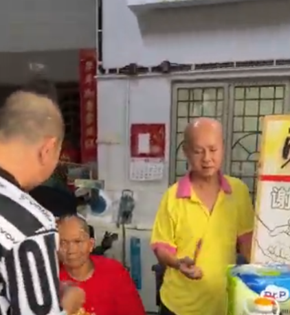
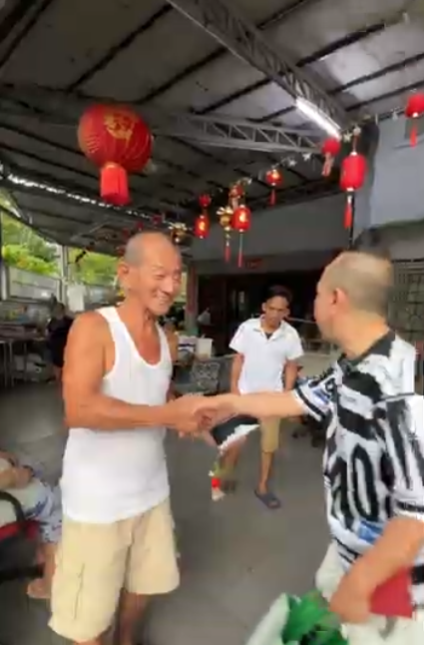

传递社区温情：手拉手的关怀，让邻里时光充满欢笑与美好

在充满人情味的社区里，最动人的风景莫过于人们互关互爱、相处融洽的温馨画面。一句真挚的问候、一次亲切的探访，就能为邻里长者的生活注入无限的光彩与活力。
走进熟悉的街头巷尾，大家聚在一起闲话家常，分享日常生活中的点滴喜悦。这种发自内心的关怀不仅拉近了人与人之间的距离，更凝聚起了浓浓的社区凝聚力。
1. 凝聚邻里情谊的三个美好细节
营造和谐温暖的社区氛围，往往始于日常生活中微小而美好的行动：
常探望与多倾听： 定期拜访社区老人家，耐心地陪他们聊聊天，倾听他们的岁月故事与生活心情。
分享喜悦与物资： 在节庆或日常日子里，主动与邻舍分享可口美食或生活物品，传递一份贴心的温暖。
用微笑传递善意： 见面时送上一抹真诚灿烂的笑容，让邻里之间充满积极与正向的能量。

2. 热情握手：连接两代人的温情纽带
高高挂起的红灯笼洋溢着喜庆与祥和，在温馨的屋檐下，双手紧紧相握的瞬间，传递着满满的尊重、关爱与感激。老人家脸上露出的欣慰笑容，是对这份社区关怀最美好的回应。
尊重长辈、关爱邻里是中华传统美德的生动体现。每一次心与心的交流，都在悄然织就一张充满爱与支持的社区防护网，让生活在这里的每一个人都能感受到满满的归属感与幸福感。
“真诚的关怀就像冬日里的暖阳，无声地照亮心房；手与手的握紧，连接的是最纯粹的邻里温情。”
只要人人多出一份爱心、多跨出一步，我们的生活社区就会变得越来越美好、越来越温馨。
总结
用心关爱身边的人，珍惜每一次与邻里相聚的时光。让我们继续用爱与微笑，共同筑造一个充满欢声笑语、互助友爱的和谐家园。
本故事旨在传递邻里互助、关爱长者、社区和谐与积极向上的正能量理念。